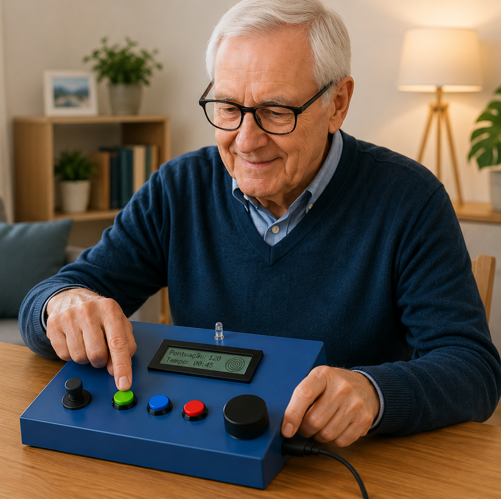

Um sistema físico de jogos terapêuticos que transforma a reabilitação diária numa experiência motivadora — combinando hardware especializado com software adaptativo.
O RehabBox nasceu da necessidade de tornar a reabilitação motora mais acessível, consistente e motivadora para pacientes com doença de Parkinson — através de jogos físicos com feedback imediato.
Análise das limitações motoras específicas do Parkinson e definição dos requisitos terapêuticos com profissionais de saúde.
Caixa física com microcontrolador, botões, joystick analógico, sensor táctil capacitivo, LCD e LED.
3 jogos focados em destreza, coordenação, velocidade de reação e memória motora.
Validação com utilizadores reais, ajuste dos parâmetros e análise de resultados clínicos.
O sistema foi desenhado para ser robusto, acessível e eficaz — tanto para pacientes como para clínicos.
sensores e controlos físicos dedicados a diferentes tipos de movimento motor
Ecrã LCD 16×2 que apresenta em tempo real o jogo ativo, nível de dificuldade, pontuação e progresso — tornando cada sessão envolvente.
Deteção precisa do toque para jogos de destreza, sem necessidade de pressão excessiva — ideal para mãos com tremor.
Controlo direcional de alta sensibilidade para navegação em jogos de coordenação motora fina.
O sistema adapta a dificuldade progressivamente — do nível 1 ao 3 — com base no desempenho de cada sessão.
Perfis individualizados por paciente com histórico de sessões, evolução e ajustes personalizados de terapia.
Código e esquemas disponíveis publicamente para reprodução, investigação e evolução por outros projetos académicos.
LED de estado com cores (vermelho, azul, verde) para comunicar acertos, erros e mudanças de nível de forma imediata e intuitiva — sem necessidade de ler o ecrã.
por semana, de 15 a 30 minutos — suficiente para estimulação motora consistente e melhoria progressiva.
Três jogos concebidos especificamente para as limitações motoras do Parkinson, com 3 níveis de dificuldade cada.
Pressiona o botão correto (vermelho, azul ou verde) quando o LED correspondente acende. O tempo de reação diminui progressivamente à medida que o nível sobe. Treina velocidade de resposta e coordenação olho-mão.
Navega um percurso apresentado no LCD usando o joystick analógico sem tocar nas paredes. Os labirintos tornam-se progressivamente mais complexos. Melhora a coordenação motora fina e o controlo direcional.
Reproduz sequências de botões apresentadas no LCD ao ritmo indicado. À medida que o nível sobe, as sequências ficam mais longas e o ritmo mais exigente. Trabalha memória motora e atenção sustentada.
O processo foi desenhado para ser intuitivo para pacientes e profissionais de saúde, sem necessidade de conhecimentos técnicos.
O terapeuta cria o perfil do paciente na plataforma e define o nível inicial e o tipo de jogo mais adequado.
O paciente interage com a caixa física de forma autónoma, guiado pelo LCD e pelos LEDs coloridos.
LED e LCD fornecem resposta instantânea a cada ação — acerto, erro ou mudança de nível — mantendo o utilizador envolvido.
Os resultados ficam registados e disponíveis para revisão e ajuste do plano terapêutico pelo clínico responsável.
Pacientes, cuidadores e terapeutas partilham a sua experiência com o RehabBox.

Nunca pensei que voltaria a sentir prazer num exercício de reabilitação. O RehabBox transformou completamente a forma como encaro as sessões — é como um jogo, não como uma obrigação.
"Os meus pacientes mostram muito mais motivação nas sessões desde que introduzimos o RehabBox. A evolução motora é notável e claramente mensurável."
"A minha mãe usa o RehabBox todos os dias. Sente que está a jogar, não a fazer terapia — e isso faz toda a diferença na adesão ao tratamento."
"Um projeto académico com impacto real. O hardware é robusto e os jogos foram muito bem pensados para as especificidades motoras do Parkinson."
Tudo o que precisa de saber sobre o RehabBox antes de começar.
O sistema foi concebido para fases iniciais e intermédias da doença. O terapeuta responsável define o nível inicial (1, 2 ou 3) consoante as capacidades motoras do paciente, garantindo que os exercícios são adequados e seguros.
Sim, após a configuração inicial pelo terapeuta, o dispositivo foi projetado para uso autónomo. O LCD e os LEDs guiam o utilizador durante toda a sessão, sem necessidade de supervisão contínua. Os resultados ficam registados para revisão posterior pelo clínico.
A recomendação clínica é de 3 sessões por semana, com duração de 15 a 30 minutos cada. Esta frequência é suficiente para estimulação motora consistente, sem causar fadiga. O terapeuta pode ajustar conforme a evolução do paciente.
O hardware foi projetado tendo em conta o tremor característico do Parkinson. O sensor táctil capacitivo não exige pressão, os botões têm uma área de contacto alargada e o software tem tolerâncias ajustáveis para minimizar ativações acidentais.
Os dados são armazenados localmente no dispositivo e na plataforma administrativa, com acesso restrito ao terapeuta responsável. O sistema cumpre o Regulamento Geral de Proteção de Dados (RGPD) e os pacientes podem solicitar o apagamento dos seus dados a qualquer momento. Consulte a nossa Política de Privacidade para mais detalhes.
Sim! O RehabBox é um projeto académico open-source desenvolvido no ISEP. Todo o código-fonte, esquemas de hardware e documentação técnica estão disponíveis publicamente para fins de investigação, replicação e melhoria. Consulte os Recursos no rodapé para aceder ao repositório GitHub.
Estudantes e investigadores do ISEP comprometidos com a inovação em saúde digital.
Responsável pela arquitetura do sistema físico, integração dos componentes eletrónicos e desenvolvimento do firmware de controlo em tempo real.
Conceção e implementação dos jogos terapêuticos, em estreita colaboração com profissionais de saúde especializados em Parkinson.
Supervisão científica, validação dos protocolos terapêuticos e ligação com a comunidade clínica e académica nacional.
Aceda à plataforma ou entre em contacto para saber mais sobre o projeto RehabBox e como o implementar na sua instituição.